Hierarchical Stock Recruitment Analysis
Stan program for Hierarchical Stock-recruitment analysis (with covariates Latitude) Chapter 9 - section 9.3
hierarchical-stock-recruitment.Rmd
library(hbm4ecology)
#> Please visit the site https://Chabert-Liddell.github.io/hbm4ecology/articles/
#> for R case study.
library(rstan)
#> Loading required package: StanHeaders
#> Loading required package: ggplot2
#> rstan (Version 2.21.5, GitRev: 2e1f913d3ca3)
#> For execution on a local, multicore CPU with excess RAM we recommend calling
#> options(mc.cores = parallel::detectCores()).
#> To avoid recompilation of unchanged Stan programs, we recommend calling
#> rstan_options(auto_write = TRUE)
library(posterior)
#> This is posterior version 1.2.1
#>
#> Attaching package: 'posterior'
#> The following objects are masked from 'package:rstan':
#>
#> ess_bulk, ess_tail
#> The following objects are masked from 'package:stats':
#>
#> mad, sd, var
library(tidyverse)
#> ── Attaching packages ─────────────────────────────────────── tidyverse 1.3.1 ──
#> ✔ tibble 3.1.7 ✔ dplyr 1.0.9
#> ✔ tidyr 1.2.0 ✔ stringr 1.4.0
#> ✔ readr 2.1.2 ✔ forcats 0.5.1
#> ✔ purrr 0.3.4
#> ── Conflicts ────────────────────────────────────────── tidyverse_conflicts() ──
#> ✖ tidyr::extract() masks rstan::extract()
#> ✖ dplyr::filter() masks stats::filter()
#> ✖ dplyr::lag() masks stats::lag()
#plot_theme <- theme_set(theme_classic(base_size = 15L))
plot_theme <- theme_classic(base_size = 15L) +
theme(axis.text.x = element_text(angle = 90),
strip.background = element_rect(fill = "#4da598"),
strip.text = element_text(size = 15))This article develops a hierarchical extension of the Ricker Stock Recruitment model. The data and models are based on a published paper by Pr{'{e}}vost et al. Prévost et al. (2003); but see also Prévost, Chaput, and (Ed.) (2001).
We show that the hierarchical assemblage of several salmon populations which we model as exchangeable units appears as the working solution to transfer information and borrow strength from data-rich to data-poor situations. The data structure is sophisticated with Normal latent vectors, and the probabilistic structures have to be designed conditionally on some available covariates, namely the latitude and the riverine wetted area accessible to salmon.
Data
data("SRSalmon")The analysis of stock and recruitment (SR) relationships is the most widely used approach for deriving Biological Reference Points in fisheries sciences. It is particularly well suited for anadromous salmonid species for which the recruitment of juveniles in freshwater is more easily measured than the recruitment of marine species. SR relationships are critical for setting reference points for the management of salmon populations, such as the spawning target \(S^{\ast}\), a biological reference point for the number of spawners which are necessary to guarantee an optimal sustainable exploitation, or the maximum sustainable exploitation rate \(h^{\ast}\).
tibble(
River = SRSalmon$name_riv,
Country = SRSalmon$country_riv,
Latitude = SRSalmon$lat,
`Area accessible to salmon` = SRSalmon$area
) %>% knitr::kable()| River | Country | Latitude | Area accessible to salmon |
|---|---|---|---|
| Nivelle | France | 43.50000 | 320995 |
| Oir | France | 48.50000 | 48000 |
| Frome | England | 50.50000 | 876420 |
| Dee | England | 53.00000 | 6170000 |
| Burrishoole | Ireland | 53.98515 | 155000 |
| Lune | England | 54.50000 | 4230000 |
| Bush | N. Ireland | 55.00000 | 845500 |
| Mourne | N. Ireland | 55.00000 | 10360560 |
| Faughan | N. Ireland | 55.00000 | 882380 |
| Girnock Burn | Scotland | 57.00000 | 58764 |
| North Esk | Scotland | 57.00000 | 2100000 |
| Laerdalselva | Norway | 61.00000 | 704000 |
| Ellidaar | Iceland | 64.00000 | 199711 |
tib <- tibble(Obs = seq(SRSalmon$n),
River = SRSalmon$riv,
Stock = SRSalmon$S,
Recruitment = SRSalmon$R)
knitr::kable(bind_rows(head(tib), tail(tib)))| Obs | River | Stock | Recruitment |
|---|---|---|---|
| 1 | 1 | 0.957 | 2.647 |
| 2 | 1 | 0.501 | 0.444 |
| 3 | 1 | 2.286 | 1.801 |
| 4 | 1 | 1.481 | 0.573 |
| 5 | 1 | 1.596 | 0.356 |
| 6 | 1 | 2.679 | 0.390 |
| 134 | 13 | 37.955 | 111.579 |
| 135 | 13 | 42.157 | 139.799 |
| 136 | 13 | 32.309 | 124.208 |
| 137 | 13 | 34.869 | 85.049 |
| 138 | 13 | 24.022 | 73.261 |
| 139 | 13 | 31.268 | 71.534 |
Location of the 13 index rivers with available stock-recruitment datasets for A. salmon (from Prévost et al. (2003)).
There are several hundreds of salmon stocks in the northeast Atlantic
area, each having its own characteristics with regard to the size and
productivity of the salmon populations. But resources to collect SR data
are limited and suitable SR series (both in terms of length and
reliability of observations) such as the ones of SRSalmon
are only available for a handful of monitored rivers spread throughout
the European area of distribution of the species. These so-called
index rivers are a representative sample from the salmon rivers
located in western Europe and under the influence of the Gulf Stream.
This sample covers a broad area including Spain, France, UK, Ireland,
Norway, the western coast of Sweden and the southwestern coast of
Iceland. The collection and pre-processing procedures used to obtain the
data ready for SR analysis presented in Table
are described in detail in Crozier et al. (2003) or Prévost et al. (2003). Here, hierarchical modeling will
be used to address two questions:
- How is the SR information transferred from the monitored data-rich rivers to set Biological Reference Points for other sparse-data salmon rivers, while accounting for the major sources of uncertainty?
- How can the joint analysis of the SR relationship for the 13 index rivers be used to forecast biological reference points for a new river without any SR data but for which relevant covariates are available?
Model without covariates
Ricker model with lognormal errors and management related parametrization
- \(\log(R_{k,t}) = h_{k}^{*} + \log(\frac{S_{k,t}}{1-h^{*}{t}}) - \frac{h^{*}_{k}}{S^{*}_{k}}S_{k,t} + \epsilon_{k,t}\)
- \(\epsilon_{k,t} \overset{iid}{\sim} Normal(0, \sigma_k^2)\)
Defining priors for the model
- \(h_k^* \sim Beta(1,1)\)
- \(\tau = \sigma^{-2} \sim Gamma(p = 10^{-3},q = 10^{-3})\) with \(\sigma_k = \sigma\), \(\forall k\)
With two different elicitation for \(S^*_k\):
a simple uniform ellicitation:
- \(S_k^* \sim Uniform(0,200)\)
or a more refined gamma elicitation:
- \(\mu_{S^*} = 40 \text{eggs/$m^2$}\)
- \(CV_{S^*} = 1\)
- \(a = CV_{S^*}^{-2}\)
- \(b = \mu_{S^*}^{-1}CV_{S^*}^{-2}\)
- \(S_k^* \sim Gamma(a,b) \mathbf{1}_{S_k^* < 200}\)
Implementation and esimation of the models in Stan
glimpse(SRSalmon)
#> List of 12
#> $ n_riv : num 13
#> $ name_riv : chr [1:13] "Nivelle" "Oir" "Frome" "Dee" ...
#> $ country_riv: chr [1:13] "France" "France" "England" "England" ...
#> $ area : num [1:13] 320995 48000 876420 6170000 155000 ...
#> $ n_obs : num [1:13] 12 14 12 9 12 7 13 13 11 12 ...
#> $ n : num 139
#> $ riv : num [1:139] 1 1 1 1 1 1 1 1 1 1 ...
#> $ S : num [1:139] 0.957 0.501 2.286 1.481 1.596 ...
#> $ R : num [1:139] 2.647 0.444 1.801 0.573 0.356 ...
#> $ lat : num [1:13] 43.5 48.5 50.5 53 54 ...
#> $ lat_pred : num [1:4] 46 52 59 63
#> $ n_pred : num 4Model with no covariates and with uniform ellicitation for \(S^*\)
hsr_model_stan <- "
data {
int n_riv; // Number of rivers
int n_obs[n_riv]; // Number of observations by rivers
int n; // Total number of observations
int riv[n]; // River membership (indices k)
vector[n] S; // Stock data
vector[n] R; // Recruitment data
}
parameters {
vector<lower=0, upper=200>[n_riv] Sopt;
vector<lower=0, upper=1>[n_riv] hopt;
real<lower=0> tau;
}
transformed parameters {
vector<lower=0>[n_riv] alpha;
vector<lower=0>[n_riv] beta ;
real<lower=0> sigma;
// real Copt;
// real Ropt;
vector[n] LogR;
// real Slope;
for (k in 1:n_riv) {
alpha[k] = exp(hopt[k])/(1-hopt[k]) ;
beta[k] = hopt[k]/Sopt[k] ;
}
sigma = tau^-0.5 ;
// Copt = hopt*Sopt/(1-hopt);
// Ropt = Sopt + Copt;
// Slope = exp(alpha);
for (t in 1:n) {
LogR[t] = log(S[t]) + log(alpha[riv[t]]) - beta[riv[t]]*S[t] ; // LogR[t] is the logarithm of the Ricker function
}
}
model {
tau ~ gamma(.001, .001) ; // Diffuse prior for the variance
for (k in 1:n_riv) {
hopt[k] ~ beta(1,1) ;
Sopt[k] ~ uniform(0, 200) ;
}
//
log(R) ~ normal(LogR, sigma) ;
}
"
model_name <-"HSR_Ricker_LogN_Management"
sm <- stan_model(model_code = hsr_model_stan,
model_name = model_name
)
#> Trying to compile a simple C file
#> Running /usr/lib/R/bin/R CMD SHLIB foo.c
#> gcc -I"/usr/share/R/include" -DNDEBUG -I"/home/chabertliddell/R/x86_64-pc-linux-gnu-library/4.2/Rcpp/include/" -I"/home/chabertliddell/R/x86_64-pc-linux-gnu-library/4.2/RcppEigen/include/" -I"/home/chabertliddell/R/x86_64-pc-linux-gnu-library/4.2/RcppEigen/include/unsupported" -I"/home/chabertliddell/R/x86_64-pc-linux-gnu-library/4.2/BH/include" -I"/home/chabertliddell/R/x86_64-pc-linux-gnu-library/4.2/StanHeaders/include/src/" -I"/home/chabertliddell/R/x86_64-pc-linux-gnu-library/4.2/StanHeaders/include/" -I"/home/chabertliddell/R/x86_64-pc-linux-gnu-library/4.2/RcppParallel/include/" -I"/home/chabertliddell/R/x86_64-pc-linux-gnu-library/4.2/rstan/include" -DEIGEN_NO_DEBUG -DBOOST_DISABLE_ASSERTS -DBOOST_PENDING_INTEGER_LOG2_HPP -DSTAN_THREADS -DBOOST_NO_AUTO_PTR -include '/home/chabertliddell/R/x86_64-pc-linux-gnu-library/4.2/StanHeaders/include/stan/math/prim/mat/fun/Eigen.hpp' -D_REENTRANT -DRCPP_PARALLEL_USE_TBB=1 -fpic -g -O2 -fdebug-prefix-map=/build/r-base-zYgbYq/r-base-4.2.1=. -fstack-protector-strong -Wformat -Werror=format-security -Wdate-time -D_FORTIFY_SOURCE=2 -c foo.c -o foo.o
#> In file included from /home/chabertliddell/R/x86_64-pc-linux-gnu-library/4.2/RcppEigen/include/Eigen/Core:88,
#> from /home/chabertliddell/R/x86_64-pc-linux-gnu-library/4.2/RcppEigen/include/Eigen/Dense:1,
#> from /home/chabertliddell/R/x86_64-pc-linux-gnu-library/4.2/StanHeaders/include/stan/math/prim/mat/fun/Eigen.hpp:13,
#> from <command-line>:
#> /home/chabertliddell/R/x86_64-pc-linux-gnu-library/4.2/RcppEigen/include/Eigen/src/Core/util/Macros.h:628:1: error: unknown type name ‘namespace’
#> 628 | namespace Eigen {
#> | ^~~~~~~~~
#> /home/chabertliddell/R/x86_64-pc-linux-gnu-library/4.2/RcppEigen/include/Eigen/src/Core/util/Macros.h:628:17: error: expected ‘=’, ‘,’, ‘;’, ‘asm’ or ‘__attribute__’ before ‘{’ token
#> 628 | namespace Eigen {
#> | ^
#> In file included from /home/chabertliddell/R/x86_64-pc-linux-gnu-library/4.2/RcppEigen/include/Eigen/Dense:1,
#> from /home/chabertliddell/R/x86_64-pc-linux-gnu-library/4.2/StanHeaders/include/stan/math/prim/mat/fun/Eigen.hpp:13,
#> from <command-line>:
#> /home/chabertliddell/R/x86_64-pc-linux-gnu-library/4.2/RcppEigen/include/Eigen/Core:96:10: fatal error: complex: No such file or directory
#> 96 | #include <complex>
#> | ^~~~~~~~~
#> compilation terminated.
#> make: *** [/usr/lib/R/etc/Makeconf:168: foo.o] Error 1
options(mc.cores = parallel::detectCores())
set.seed(1234)
# Number iteration for the "warm up" phase
n_warm <- 2500
# Number iteration for inferences
n_iter <- 5000
n_thin <- 1
# Number of chains
n_chains <- 4
# Inferences
fit <- sampling(object = sm,
data = SRSalmon,
pars = NA, #params,
chains = n_chains,
iter = n_iter,
warmup = n_warm,
thin = n_thin,
control = list("adapt_delta" = .85) # Acceptance rate up from .8 to remove some divergent transitions
#control = list("max_treedepth" = 12)
)Diagnostic of the convergence:
params<-c("Sopt","hopt","tau")
stan_rhat(fit)
#> `stat_bin()` using `bins = 30`. Pick better value with `binwidth`.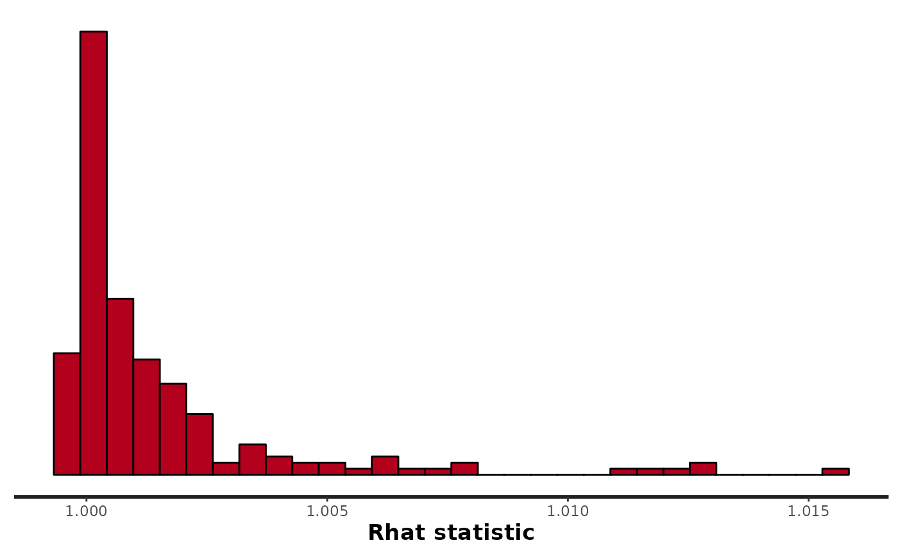
monitor(rstan::extract(fit, pars = params, permuted = FALSE, inc_warmup = TRUE))
#> Inference for the input samples (4 chains: each with iter = 5000; warmup = 2500):
#>
#> Q5 Q50 Q95 Mean SD Rhat Bulk_ESS Tail_ESS
#> Sopt[1] 0.3 0.5 0.7 0.5 0.1 1.00 3230 2104
#> Sopt[2] 0.4 1.1 1.9 1.1 0.5 1.00 3572 2468
#> Sopt[3] 2.1 2.8 136.6 18.2 42.2 1.01 674 1084
#> Sopt[4] 1.1 56.3 184.0 69.5 64.9 1.00 1109 3902
#> Sopt[5] 5.9 84.4 187.3 88.8 60.0 1.00 3074 2002
#> Sopt[6] 7.4 95.9 189.6 97.3 58.7 1.00 6825 4102
#> Sopt[7] 2.3 20.9 180.4 55.0 62.2 1.00 1748 5784
#> Sopt[8] 0.8 1.2 39.0 7.4 27.7 1.00 1693 795
#> Sopt[9] 6.2 8.3 14.7 9.9 10.1 1.00 4348 1993
#> Sopt[10] 2.6 9.9 176.8 47.6 59.9 1.00 1758 5542
#> Sopt[11] 10.6 93.6 189.1 95.6 58.3 1.00 5489 4772
#> Sopt[12] 14.5 102.1 189.8 101.7 56.6 1.00 7631 6317
#> Sopt[13] 28.6 103.3 189.7 105.6 52.0 1.00 4054 4542
#> hopt[1] 0.1 0.3 0.5 0.3 0.1 1.00 3257 2187
#> hopt[2] 0.0 0.1 0.3 0.1 0.1 1.00 3831 2456
#> hopt[3] 0.0 0.4 0.6 0.4 0.2 1.01 613 1060
#> hopt[4] 0.1 0.3 0.7 0.3 0.2 1.00 1050 3301
#> hopt[5] 0.4 0.5 0.7 0.5 0.1 1.00 3663 1792
#> hopt[6] 0.2 0.3 0.4 0.3 0.1 1.00 7582 4514
#> hopt[7] 0.5 0.6 0.8 0.6 0.1 1.00 1833 5191
#> hopt[8] 0.6 0.8 0.8 0.7 0.1 1.00 1764 985
#> hopt[9] 0.7 0.8 0.9 0.8 0.1 1.00 4725 2291
#> hopt[10] 0.2 0.4 0.6 0.4 0.1 1.00 1766 5338
#> hopt[11] 0.0 0.2 0.4 0.2 0.1 1.00 3992 2883
#> hopt[12] 0.3 0.4 0.5 0.4 0.1 1.00 8919 6485
#> hopt[13] 0.5 0.6 0.7 0.6 0.1 1.00 5358 3892
#> tau 2.8 3.7 4.7 3.7 0.6 1.01 1225 2927
#>
#> For each parameter, Bulk_ESS and Tail_ESS are crude measures of
#> effective sample size for bulk and tail quantities respectively (an ESS > 100
#> per chain is considered good), and Rhat is the potential scale reduction
#> factor on rank normalized split chains (at convergence, Rhat <= 1.05).
print(fit, par = c("lp__", params) )
#> Inference for Stan model: HSR_Ricker_LogN_Management.
#> 4 chains, each with iter=5000; warmup=2500; thin=1;
#> post-warmup draws per chain=2500, total post-warmup draws=10000.
#>
#> mean se_mean sd 2.5% 25% 50% 75% 97.5% n_eff Rhat
#> lp__ 26.21 0.22 5.38 14.33 22.77 26.61 30.14 35.40 623 1.01
#> Sopt[1] 0.51 0.00 0.12 0.22 0.44 0.53 0.59 0.71 2631 1.00
#> Sopt[2] 1.11 0.01 0.46 0.24 0.78 1.11 1.43 1.99 3693 1.00
#> Sopt[3] 18.23 2.08 42.23 1.99 2.51 2.84 3.52 168.77 412 1.02
#> Sopt[4] 69.47 1.74 64.93 1.06 2.52 56.25 125.33 192.80 1390 1.00
#> Sopt[5] 88.80 0.93 60.05 4.65 32.68 84.36 140.52 193.90 4161 1.00
#> Sopt[6] 97.25 0.64 58.73 3.45 45.79 95.94 148.59 194.98 8301 1.00
#> Sopt[7] 55.04 1.31 62.22 2.09 3.68 20.86 103.51 190.79 2249 1.00
#> Sopt[8] 7.43 0.96 27.68 0.81 1.00 1.16 1.45 116.59 830 1.00
#> Sopt[9] 9.87 0.32 10.06 5.96 7.27 8.29 9.81 19.59 965 1.00
#> Sopt[10] 47.64 1.31 59.91 2.48 3.62 9.86 84.24 188.54 2087 1.00
#> Sopt[11] 95.63 0.73 58.29 8.17 42.54 93.65 145.98 194.77 6334 1.00
#> Sopt[12] 101.75 0.61 56.65 9.70 51.97 102.13 150.95 194.63 8597 1.00
#> Sopt[13] 105.57 0.77 51.99 23.91 59.75 103.31 150.03 194.79 4586 1.00
#> hopt[1] 0.31 0.00 0.13 0.08 0.22 0.31 0.40 0.56 3500 1.00
#> hopt[2] 0.15 0.00 0.08 0.02 0.09 0.14 0.20 0.33 4823 1.00
#> hopt[3] 0.35 0.01 0.16 0.02 0.25 0.38 0.47 0.61 465 1.01
#> hopt[4] 0.32 0.01 0.17 0.08 0.20 0.27 0.39 0.73 841 1.00
#> hopt[5] 0.48 0.00 0.09 0.35 0.43 0.47 0.52 0.73 2251 1.00
#> hopt[6] 0.31 0.00 0.09 0.14 0.25 0.31 0.36 0.48 6493 1.00
#> hopt[7] 0.63 0.00 0.10 0.47 0.55 0.60 0.71 0.83 1603 1.00
#> hopt[8] 0.75 0.00 0.08 0.52 0.71 0.76 0.80 0.86 1003 1.00
#> hopt[9] 0.80 0.00 0.06 0.65 0.77 0.81 0.84 0.89 3000 1.00
#> hopt[10] 0.38 0.00 0.14 0.16 0.28 0.36 0.49 0.65 1611 1.00
#> hopt[11] 0.20 0.00 0.12 0.02 0.12 0.18 0.26 0.50 4151 1.00
#> hopt[12] 0.43 0.00 0.07 0.28 0.38 0.43 0.48 0.57 8462 1.00
#> hopt[13] 0.58 0.00 0.08 0.44 0.52 0.57 0.62 0.78 4580 1.00
#> tau 3.73 0.02 0.57 2.69 3.33 3.71 4.10 4.92 1232 1.01
#>
#> Samples were drawn using NUTS(diag_e) at Mon Aug 29 19:55:21 2022.
#> For each parameter, n_eff is a crude measure of effective sample size,
#> and Rhat is the potential scale reduction factor on split chains (at
#> convergence, Rhat=1).
dfw_unif <- extract_wider(fit)
dfl_unif <- extract_longer(fit)
dfl_unif %>%
filter(str_detect(parameter, "Sopt")) %>%
mutate(Site = SRSalmon$name_riv[as.integer(str_sub(parameter, str_length("Sopt.") + 1))]) %>%
ggplot(aes(y = log(value), x = Site)) +
geom_boxplot(fill = "grey80") +
ylab("log(S*)") +
plot_theme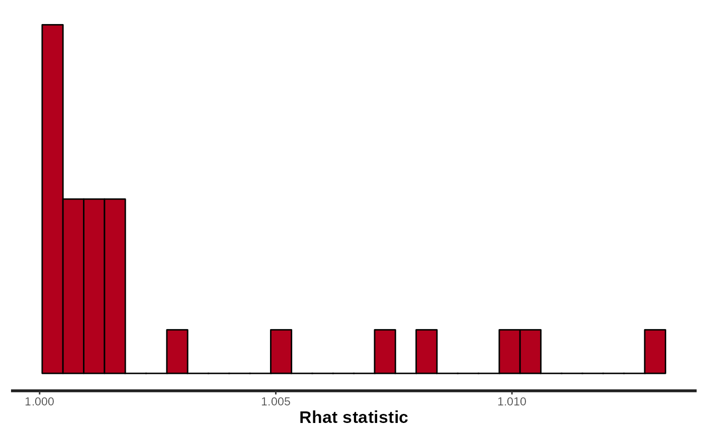
dfl_unif %>%
filter(str_detect(parameter, "hopt")) %>%
mutate(Site = SRSalmon$name_riv[as.integer(str_sub(parameter, str_length("hopt.") + 1))]) %>%
ggplot(aes(y = log(value), x = Site)) +
geom_boxplot(fill = "grey80") +
ylab("log(h*)") +
plot_theme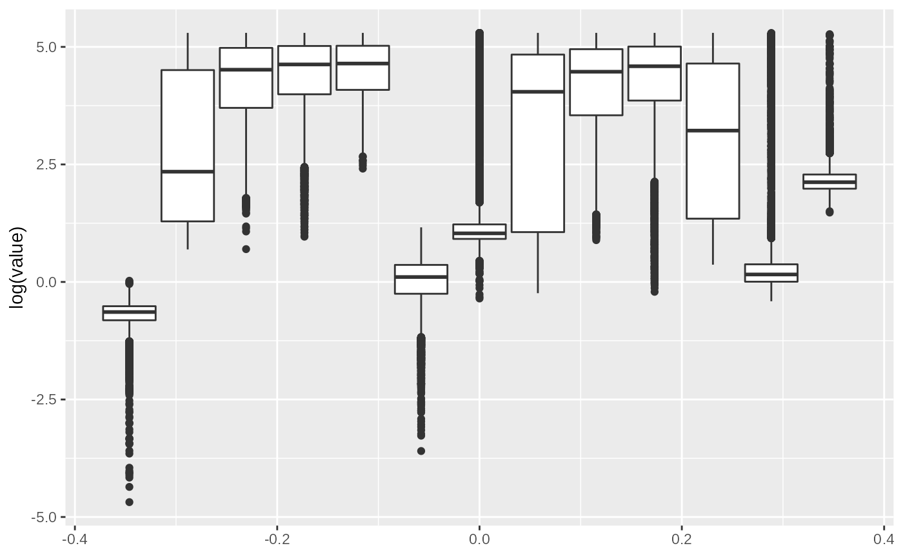
Model with no covariates and with Gamma prior for \(S*\)
hsr_model_indep_S_gamma_stan <- "
data {
int n_riv; // Number of rivers
int n_obs[n_riv]; // Number of observations by rivers
int n; // Total number of observations
int riv[n]; // River membership (indices k)
vector[n] S; // Stock data
vector[n] R; // Recruitment data
}
parameters {
vector<lower=0, upper=200>[n_riv] Sopt;
vector<lower=0, upper=1>[n_riv] hopt;
real<lower=0> tau;
}
transformed parameters {
vector<lower=0>[n_riv] alpha;
vector<lower=0>[n_riv] beta ;
real<lower=0> sigma;
// real Copt;
// real Ropt;
vector[n] LogR;
// real Slope;
for (k in 1:n_riv) {
alpha[k] = exp(hopt[k])/(1-hopt[k]) ;
beta[k] = hopt[k]/Sopt[k] ;
}
sigma = tau^-0.5 ;
// Copt = hopt*Sopt/(1-hopt);
// Ropt = Sopt + Copt;
// Slope = exp(alpha);
for (t in 1:n) {
LogR[t] = log(S[t]) + log(alpha[riv[t]]) - beta[riv[t]]*S[t] ; // LogR[t] is the logarithm of the Ricker function
}
}
model {
tau ~ gamma(.001, .001) ; // Diffuse prior for the variance
for (k in 1:n_riv) {
hopt[k] ~ beta(1,1) ;
Sopt[k] ~ gamma(1, 1./1600) ;
}
//
log(R) ~ normal(LogR, sigma) ;
}
"
model_name <-"HSR_Ricker_LogN_Management_S_gamma"
sm <- stan_model(model_code = hsr_model_indep_S_gamma_stan,
model_name = model_name
)
#> Running /usr/lib/R/bin/R CMD SHLIB foo.c
#> gcc -I"/usr/share/R/include" -DNDEBUG -I"/home/chabertliddell/R/x86_64-pc-linux-gnu-library/4.2/Rcpp/include/" -I"/home/chabertliddell/R/x86_64-pc-linux-gnu-library/4.2/RcppEigen/include/" -I"/home/chabertliddell/R/x86_64-pc-linux-gnu-library/4.2/RcppEigen/include/unsupported" -I"/home/chabertliddell/R/x86_64-pc-linux-gnu-library/4.2/BH/include" -I"/home/chabertliddell/R/x86_64-pc-linux-gnu-library/4.2/StanHeaders/include/src/" -I"/home/chabertliddell/R/x86_64-pc-linux-gnu-library/4.2/StanHeaders/include/" -I"/home/chabertliddell/R/x86_64-pc-linux-gnu-library/4.2/RcppParallel/include/" -I"/home/chabertliddell/R/x86_64-pc-linux-gnu-library/4.2/rstan/include" -DEIGEN_NO_DEBUG -DBOOST_DISABLE_ASSERTS -DBOOST_PENDING_INTEGER_LOG2_HPP -DSTAN_THREADS -DBOOST_NO_AUTO_PTR -include '/home/chabertliddell/R/x86_64-pc-linux-gnu-library/4.2/StanHeaders/include/stan/math/prim/mat/fun/Eigen.hpp' -D_REENTRANT -DRCPP_PARALLEL_USE_TBB=1 -fpic -g -O2 -fdebug-prefix-map=/build/r-base-zYgbYq/r-base-4.2.1=. -fstack-protector-strong -Wformat -Werror=format-security -Wdate-time -D_FORTIFY_SOURCE=2 -c foo.c -o foo.o
#> In file included from /home/chabertliddell/R/x86_64-pc-linux-gnu-library/4.2/RcppEigen/include/Eigen/Core:88,
#> from /home/chabertliddell/R/x86_64-pc-linux-gnu-library/4.2/RcppEigen/include/Eigen/Dense:1,
#> from /home/chabertliddell/R/x86_64-pc-linux-gnu-library/4.2/StanHeaders/include/stan/math/prim/mat/fun/Eigen.hpp:13,
#> from <command-line>:
#> /home/chabertliddell/R/x86_64-pc-linux-gnu-library/4.2/RcppEigen/include/Eigen/src/Core/util/Macros.h:628:1: error: unknown type name ‘namespace’
#> 628 | namespace Eigen {
#> | ^~~~~~~~~
#> /home/chabertliddell/R/x86_64-pc-linux-gnu-library/4.2/RcppEigen/include/Eigen/src/Core/util/Macros.h:628:17: error: expected ‘=’, ‘,’, ‘;’, ‘asm’ or ‘__attribute__’ before ‘{’ token
#> 628 | namespace Eigen {
#> | ^
#> In file included from /home/chabertliddell/R/x86_64-pc-linux-gnu-library/4.2/RcppEigen/include/Eigen/Dense:1,
#> from /home/chabertliddell/R/x86_64-pc-linux-gnu-library/4.2/StanHeaders/include/stan/math/prim/mat/fun/Eigen.hpp:13,
#> from <command-line>:
#> /home/chabertliddell/R/x86_64-pc-linux-gnu-library/4.2/RcppEigen/include/Eigen/Core:96:10: fatal error: complex: No such file or directory
#> 96 | #include <complex>
#> | ^~~~~~~~~
#> compilation terminated.
#> make: *** [/usr/lib/R/etc/Makeconf:168: foo.o] Error 1
set.seed(1234)
# Number iteration for the "warm up" phase
n_warm <- 2500
# Number iteration for inferences
n_iter <- 5000
n_thin <- 1
# Number of chains
n_chains <- 4
params<-c("Sopt","hopt","tau")
# Inferences
fit <- sampling(object = sm,
data = SRSalmon,
pars = NA, #params,
chains = n_chains,
iter = n_iter,
warmup = n_warm,
thin = n_thin,
control = list("adapt_delta" = .85)# Acceptance rate up from .8 to remove some divergent transitions
)Diagnostic of the convergence:
params<-c("Sopt","hopt","tau")
stan_rhat(fit)
#> `stat_bin()` using `bins = 30`. Pick better value with `binwidth`.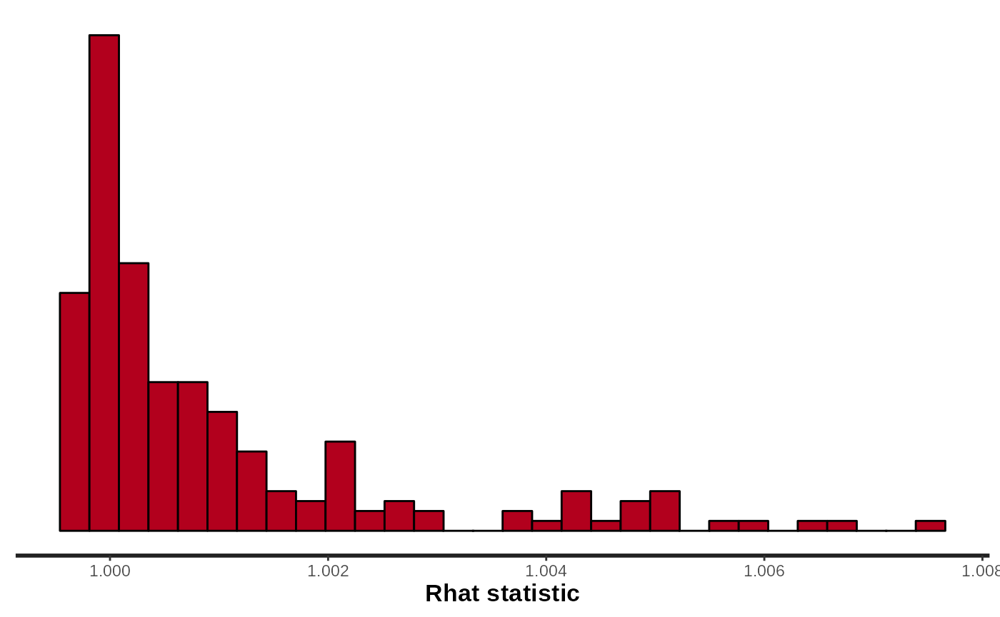
monitor(rstan::extract(fit, pars = params, permuted = FALSE, inc_warmup = TRUE))
#> Inference for the input samples (4 chains: each with iter = 5000; warmup = 2500):
#>
#> Q5 Q50 Q95 Mean SD Rhat Bulk_ESS Tail_ESS
#> Sopt[1] 0.3 0.5 0.7 0.5 0.1 1.00 3281 1910
#> Sopt[2] 0.4 1.1 1.9 1.1 0.4 1.00 3864 2874
#> Sopt[3] 2.1 2.8 123.8 16.3 39.1 1.00 906 1235
#> Sopt[4] 1.1 48.9 183.7 66.6 64.6 1.00 1257 4396
#> Sopt[5] 5.9 78.5 187.0 85.1 60.0 1.00 3312 2234
#> Sopt[6] 6.7 92.5 188.8 95.1 58.8 1.00 6604 3476
#> Sopt[7] 2.2 18.2 176.7 52.4 60.5 1.00 1976 5773
#> Sopt[8] 0.8 1.2 44.3 7.6 27.8 1.00 1548 648
#> Sopt[9] 6.2 8.3 14.0 9.1 3.9 1.00 4717 3206
#> Sopt[10] 2.7 8.6 173.9 45.9 58.6 1.00 1736 6340
#> Sopt[11] 10.3 87.7 187.7 91.9 59.0 1.00 6135 5340
#> Sopt[12] 14.8 97.9 190.2 100.0 56.6 1.00 6915 5028
#> Sopt[13] 27.4 100.0 189.2 103.6 52.0 1.00 3616 3879
#> hopt[1] 0.1 0.3 0.5 0.3 0.1 1.00 3112 1735
#> hopt[2] 0.0 0.1 0.3 0.2 0.1 1.00 3997 2839
#> hopt[3] 0.0 0.4 0.6 0.4 0.2 1.01 789 978
#> hopt[4] 0.1 0.3 0.7 0.3 0.2 1.00 1235 4129
#> hopt[5] 0.4 0.5 0.7 0.5 0.1 1.00 4065 2135
#> hopt[6] 0.2 0.3 0.5 0.3 0.1 1.00 6894 4684
#> hopt[7] 0.5 0.6 0.8 0.6 0.1 1.00 2054 5313
#> hopt[8] 0.6 0.8 0.8 0.7 0.1 1.00 1601 762
#> hopt[9] 0.7 0.8 0.9 0.8 0.1 1.00 4764 3686
#> hopt[10] 0.2 0.4 0.6 0.4 0.1 1.00 1697 4804
#> hopt[11] 0.0 0.2 0.4 0.2 0.1 1.00 5131 3521
#> hopt[12] 0.3 0.4 0.5 0.4 0.1 1.00 8140 5414
#> hopt[13] 0.5 0.6 0.7 0.6 0.1 1.00 5063 3527
#> tau 2.9 3.7 4.7 3.7 0.6 1.00 1499 3492
#>
#> For each parameter, Bulk_ESS and Tail_ESS are crude measures of
#> effective sample size for bulk and tail quantities respectively (an ESS > 100
#> per chain is considered good), and Rhat is the potential scale reduction
#> factor on rank normalized split chains (at convergence, Rhat <= 1.05).
print(fit, par = c("lp__", params) )
#> Inference for Stan model: HSR_Ricker_LogN_Management_S_gamma.
#> 4 chains, each with iter=5000; warmup=2500; thin=1;
#> post-warmup draws per chain=2500, total post-warmup draws=10000.
#>
#> mean se_mean sd 2.5% 25% 50% 75% 97.5% n_eff Rhat
#> lp__ 26.02 0.19 5.24 14.73 22.67 26.39 29.74 35.24 778 1.01
#> Sopt[1] 0.51 0.00 0.13 0.21 0.44 0.53 0.60 0.72 2668 1.00
#> Sopt[2] 1.12 0.01 0.45 0.28 0.80 1.12 1.43 1.99 4105 1.00
#> Sopt[3] 16.30 1.64 39.07 2.01 2.51 2.84 3.47 160.48 568 1.01
#> Sopt[4] 66.61 1.62 64.57 1.06 2.18 48.85 121.70 191.90 1591 1.00
#> Sopt[5] 85.15 0.88 60.02 4.53 28.80 78.52 136.63 193.00 4655 1.00
#> Sopt[6] 95.08 0.64 58.82 3.18 43.41 92.51 146.30 194.66 8318 1.00
#> Sopt[7] 52.36 1.21 60.49 2.04 3.61 18.23 96.33 189.11 2496 1.00
#> Sopt[8] 7.57 1.10 27.76 0.81 1.00 1.16 1.45 116.83 637 1.01
#> Sopt[9] 9.11 0.08 3.94 5.94 7.29 8.30 9.80 16.84 2625 1.00
#> Sopt[10] 45.89 1.37 58.65 2.49 3.58 8.59 80.33 187.28 1832 1.00
#> Sopt[11] 91.90 0.70 59.04 8.15 36.32 87.74 143.43 193.71 7048 1.00
#> Sopt[12] 99.96 0.63 56.60 9.76 49.92 97.89 149.17 194.59 8039 1.00
#> Sopt[13] 103.62 0.81 51.97 22.67 58.37 99.98 147.70 194.97 4163 1.00
#> hopt[1] 0.31 0.00 0.13 0.08 0.22 0.31 0.40 0.56 3429 1.00
#> hopt[2] 0.15 0.00 0.08 0.03 0.09 0.14 0.20 0.32 5004 1.00
#> hopt[3] 0.36 0.01 0.16 0.02 0.26 0.39 0.48 0.61 633 1.01
#> hopt[4] 0.32 0.01 0.17 0.09 0.20 0.27 0.41 0.72 944 1.00
#> hopt[5] 0.49 0.00 0.09 0.35 0.43 0.47 0.52 0.73 2598 1.00
#> hopt[6] 0.31 0.00 0.09 0.14 0.25 0.31 0.36 0.49 5487 1.00
#> hopt[7] 0.63 0.00 0.10 0.47 0.55 0.60 0.71 0.83 1800 1.00
#> hopt[8] 0.75 0.00 0.08 0.52 0.71 0.76 0.80 0.86 864 1.01
#> hopt[9] 0.80 0.00 0.06 0.66 0.77 0.81 0.84 0.89 4043 1.00
#> hopt[10] 0.39 0.00 0.14 0.16 0.28 0.37 0.50 0.65 1556 1.00
#> hopt[11] 0.21 0.00 0.12 0.02 0.12 0.19 0.27 0.52 5260 1.00
#> hopt[12] 0.43 0.00 0.08 0.28 0.38 0.43 0.48 0.57 7608 1.00
#> hopt[13] 0.58 0.00 0.08 0.44 0.53 0.57 0.63 0.79 4246 1.00
#> tau 3.74 0.01 0.57 2.71 3.34 3.71 4.11 4.93 1477 1.00
#>
#> Samples were drawn using NUTS(diag_e) at Mon Aug 29 19:56:14 2022.
#> For each parameter, n_eff is a crude measure of effective sample size,
#> and Rhat is the potential scale reduction factor on split chains (at
#> convergence, Rhat=1).
dfw_gamma <- extract_wider(fit) %>% mutate(Model = "Gamma")
dfl_gamma <- extract_longer(fit)
dfl_gamma %>%
filter(str_detect(parameter, "Sopt")) %>%
mutate(Site = SRSalmon$name_riv[as.integer(str_sub(parameter, str_length("Sopt.") + 1))]) %>%
ggplot(aes(y = log(value), x = Site)) +
geom_boxplot(fill = "grey80") +
ylab("log(S*)") +
plot_theme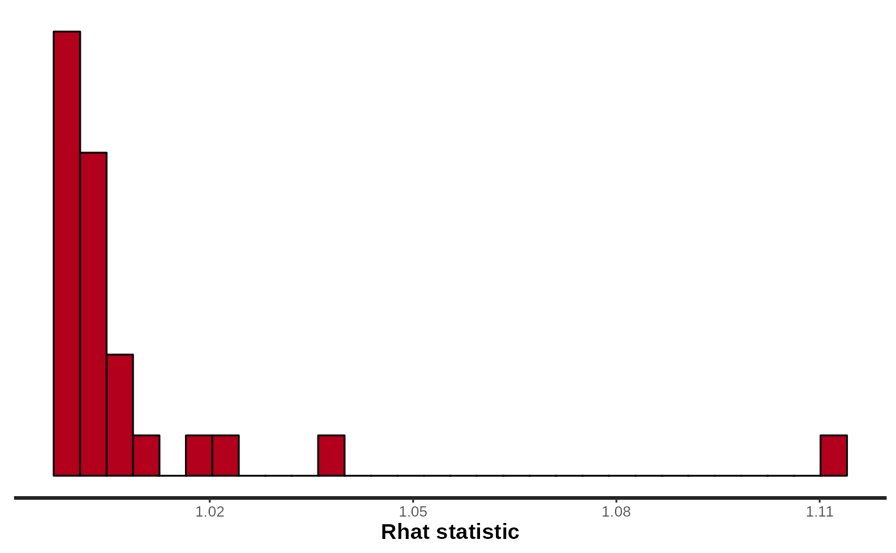
dfl_gamma %>%
filter(str_detect(parameter, "hopt")) %>%
mutate(Site = SRSalmon$name_riv[as.integer(str_sub(parameter, str_length("hopt.") + 1))]) %>%
ggplot(aes(y = log(value), x = Site)) +
geom_boxplot(fill = "grey80") +
ylab("log(h*)") +
plot_theme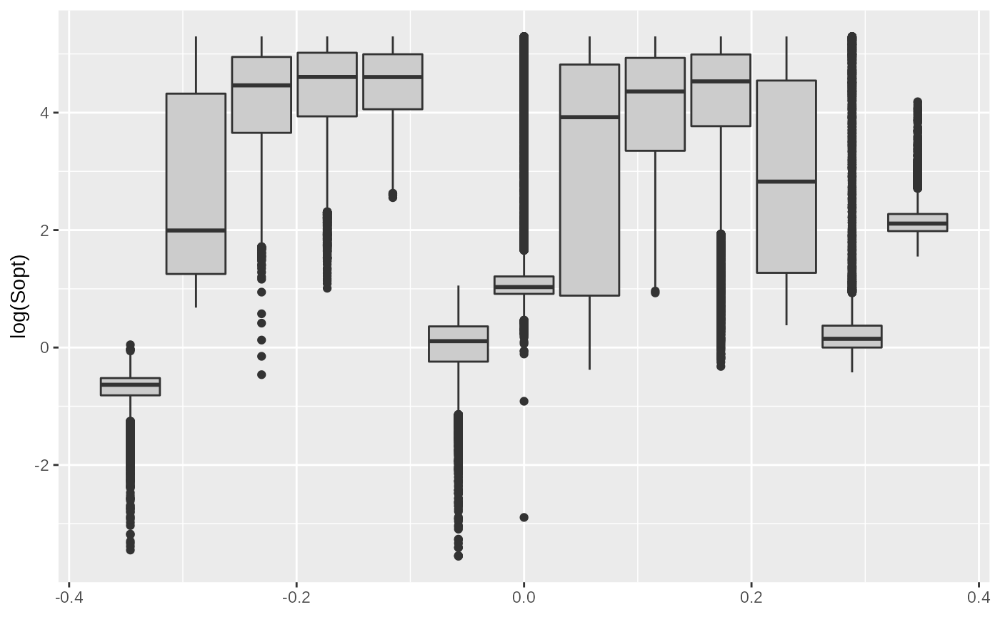
The choice of the prior distribution of \(S^*\) does not make much difference on the posterior distribution estimate.
bind_rows(dfl_unif %>% mutate (Model = "Uniform"), dfl_gamma %>% mutate(Model = "Gamma")) %>%
filter(str_detect(parameter, "Sopt")) %>%
mutate(Site = SRSalmon$name_riv[as.integer(str_sub(parameter, str_length("Sopt.") + 1))]) %>%
ggplot(aes(x = log(value), linetype = Model, color = Model)) +
geom_density() +
facet_wrap(~ Site) +
xlab("log(S*)") +
plot_theme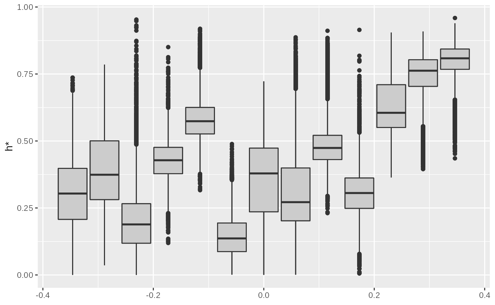
Hierarchical model with latitudinal covariates
The hierarchical modeling is designed to improve the estimation of parameters \(S^*\) and \(h^*\) for data-poor rivers by borrowing strength from data-rich rivers. It is then designed to capture the between-rivers variability of the parameters (\(S^*\), \(h^*\)) conditionnaly on the latitude. This can be done by introducing a log-linear relationship between the expectation of \(S^*_k\) and the latitude of the river \(x_k\):
- \(\log(\mu_{S^*_k}) = \alpha x_k + \beta\)
- \(\alpha \sim Uniform(-5,5)\)
- \(\beta \sim Uniform(-50,50)\)
\(S^*_k\) is drawn from a Gamma distribution which the parameters depend on the latitude:
- \(CV_{S^*} ~ Uniform(0,20)\)
- \(a_k = \frac{1}{CV_{S*}^2}\)
- \(b_k = \frac{1}{\mu_{S^*_k}CV^2_{S^*}}\)
- \(S^*_k \sim Gamma(a_k, b_k)1_{S^*_k<200}\)
Then we express the linear linear relationship between the expectation of \(h^*_k\) and the latitude of the river \(x_k\) on a logit scale:
- \(logit(\mu_{h^*_k}) = \delta x_k + \kappa\)
- \(\delta \sim Uniform(-5,5)\)
- \(\kappa \sim Uniform(-50,50)\)
Given the expected mean in the logit scale, \(logit(h_{k}^{\ast})\) for each river \(k\) is drawn in a Normal distribution with expected mean \(logit(\mu_{h_{k}^{\ast}})\) and precision \(\tau_{h^{\ast}}^{-2}\). A diffuse prior is set on the precision:
- \(logit(h^*_k) \sim Normal(logit(\mu_k^*), \tau^2)\)
- \(\tau^{-2} \sim Gamma(.001, .001)\)

Directed acyclic graph of the stock recruitment model with covariates
hsr_model_hier_S_gamma_stan <- "
data {
int n_riv; // Number of rivers
int n_obs[n_riv]; // Number of observations by rivers
int n; // Total number of observations
int riv[n]; // River membership (indices k)
vector<lower=0>[n] S; // Stock data
vector<lower=0>[n] R; // Recruitment data
vector[n_riv] lat; //Latitude of rivers
int n_pred;
vector[n_pred] lat_pred;
}
transformed data {
vector[n_riv] lat_rescaled;
// real CV_S;
// real a;
// a = 1/(CV_S*CV_S);
lat_rescaled = lat-mean(lat);
}
parameters {
real<lower=0> tau;
real<lower=0, upper=20> CV_S;
real<lower=-5, upper=5> alpha;
real<lower=-50, upper=50> beta;
vector<lower=0, upper=200>[n_riv] Sopt;
real<lower=-5, upper=5> delta;
real<lower=-50, upper=50> kappa;
real<lower=0> tau_h;
vector[n_riv] logit_h;
//vector[n_riv] logit_h_raw; // centered parametrization for logit_h
}
transformed parameters {
real<lower=0> sigma; // stdev for lognormal noise
// vector[n_riv] log_mu_S; // log of the expected mean of Sopt
vector<lower=0>[n_riv] mu_S; // Expected mean of Sopt
real<lower=0> a; // parameters of the gamma prior of Sopt
vector<lower=0>[n_riv] b; // parameters of the gamma prior of Sopt
real<lower=0> sigma_h; // stdev for logit of h
vector[n_riv] logit_mu_h; // logit of the expected mean of hopt
vector<lower=0, upper=1>[n_riv] hopt;
//vector[n_riv] logit_h; // logit of hopt
vector[n] LogR;
sigma = tau^-0.5 ;
sigma_h = tau_h^-0.5 ;
for (k in 1:n_riv) {
mu_S[k] = exp(alpha * (lat[k]) + beta) ;
// mu_S[k] = exp(alpha * (lat_rescaled[k]) + beta) ;
// mu_S[k] = exp(log_mu_S[k]);
logit_mu_h[k] = delta * (lat[k]) + kappa ;
// logit_mu_h[k] = delta * (lat_rescaled[k]) + kappa ;
// logit_h[k] = logit_mu_h[k] + sigma_h * logit_h_raw[k];
}
a = 1/square(CV_S) ;
for (k in 1:n_riv) {
b[k] = 1/(mu_S[k]*square(CV_S)) ;
}
hopt = inv_logit(logit_h) ;
for (t in 1:n) {
LogR[t] = hopt[riv[t]] + log(S[t]) - log(1 - hopt[riv[t]]) - hopt[riv[t]]/Sopt[riv[t]]*S[t] ; // LogR[t] is the logarithm of the Ricker function
}
}
model {
// alpha ~ uniform(-5, 5);
// beta ~ uniform(-50, 50);
// CV_S ~ uniform(0, 20);
// delta ~ uniform(-5, 5);
// kappa ~ uniform(-50, 50);
tau ~ gamma(.001, .001) ; // Diffuse prior for the precision
tau_h ~ gamma(.001, .001) ; // Diffuse prior for the precision
//logit_h_raw ~ std_normal();
for (k in 1:n_riv) {
logit_h[k] ~ normal(logit_mu_h[k], sigma_h);
Sopt[k] ~ gamma(a, b[k]) ; // T[0,200] ;
}
log(R) ~ normal(LogR, sigma) ;
}
generated quantities {
real a_pred;
vector[n_pred] b_pred;
vector[n_pred] Sopt_pred;
vector[n_pred] logit_hopt_pred;
vector<lower=0,upper=1>[n_pred] hopt_pred;
// Posterior Predictive for new rivers with latitude lat_pred[p]
a_pred = 1/(CV_S*CV_S);
for ( p in 1 : n_pred ) {
// b_pred[p] = a/(exp(alpha * lat_pred[p] + beta - alpha * mean(lat)));
b_pred[p] = a_pred*(1/exp(alpha * lat_pred[p] + beta));
Sopt_pred[p] = gamma_rng(a_pred,b_pred[p]); //T[0,200];
// logit_hopt_pred[p] = normal_rng(exp(delta * lat_pred[p] + kappa - delta * mean(lat)), sigma_h);`
logit_hopt_pred[p] = normal_rng(delta * lat_pred[p] + kappa, sigma_h);
hopt_pred[p] = inv_logit(logit_hopt_pred[p]);
} // end loop on predictions p
}
"
model_name_hier <-"HSR_Ricker_LogN_Management_S_gamma_hier"
sm_hier <- stan_model(model_code = hsr_model_hier_S_gamma_stan,
model_name = model_name_hier)
#> Trying to compile a simple C file
#> Running /usr/lib/R/bin/R CMD SHLIB foo.c
#> gcc -I"/usr/share/R/include" -DNDEBUG -I"/home/chabertliddell/R/x86_64-pc-linux-gnu-library/4.2/Rcpp/include/" -I"/home/chabertliddell/R/x86_64-pc-linux-gnu-library/4.2/RcppEigen/include/" -I"/home/chabertliddell/R/x86_64-pc-linux-gnu-library/4.2/RcppEigen/include/unsupported" -I"/home/chabertliddell/R/x86_64-pc-linux-gnu-library/4.2/BH/include" -I"/home/chabertliddell/R/x86_64-pc-linux-gnu-library/4.2/StanHeaders/include/src/" -I"/home/chabertliddell/R/x86_64-pc-linux-gnu-library/4.2/StanHeaders/include/" -I"/home/chabertliddell/R/x86_64-pc-linux-gnu-library/4.2/RcppParallel/include/" -I"/home/chabertliddell/R/x86_64-pc-linux-gnu-library/4.2/rstan/include" -DEIGEN_NO_DEBUG -DBOOST_DISABLE_ASSERTS -DBOOST_PENDING_INTEGER_LOG2_HPP -DSTAN_THREADS -DBOOST_NO_AUTO_PTR -include '/home/chabertliddell/R/x86_64-pc-linux-gnu-library/4.2/StanHeaders/include/stan/math/prim/mat/fun/Eigen.hpp' -D_REENTRANT -DRCPP_PARALLEL_USE_TBB=1 -fpic -g -O2 -fdebug-prefix-map=/build/r-base-zYgbYq/r-base-4.2.1=. -fstack-protector-strong -Wformat -Werror=format-security -Wdate-time -D_FORTIFY_SOURCE=2 -c foo.c -o foo.o
#> In file included from /home/chabertliddell/R/x86_64-pc-linux-gnu-library/4.2/RcppEigen/include/Eigen/Core:88,
#> from /home/chabertliddell/R/x86_64-pc-linux-gnu-library/4.2/RcppEigen/include/Eigen/Dense:1,
#> from /home/chabertliddell/R/x86_64-pc-linux-gnu-library/4.2/StanHeaders/include/stan/math/prim/mat/fun/Eigen.hpp:13,
#> from <command-line>:
#> /home/chabertliddell/R/x86_64-pc-linux-gnu-library/4.2/RcppEigen/include/Eigen/src/Core/util/Macros.h:628:1: error: unknown type name ‘namespace’
#> 628 | namespace Eigen {
#> | ^~~~~~~~~
#> /home/chabertliddell/R/x86_64-pc-linux-gnu-library/4.2/RcppEigen/include/Eigen/src/Core/util/Macros.h:628:17: error: expected ‘=’, ‘,’, ‘;’, ‘asm’ or ‘__attribute__’ before ‘{’ token
#> 628 | namespace Eigen {
#> | ^
#> In file included from /home/chabertliddell/R/x86_64-pc-linux-gnu-library/4.2/RcppEigen/include/Eigen/Dense:1,
#> from /home/chabertliddell/R/x86_64-pc-linux-gnu-library/4.2/StanHeaders/include/stan/math/prim/mat/fun/Eigen.hpp:13,
#> from <command-line>:
#> /home/chabertliddell/R/x86_64-pc-linux-gnu-library/4.2/RcppEigen/include/Eigen/Core:96:10: fatal error: complex: No such file or directory
#> 96 | #include <complex>
#> | ^~~~~~~~~
#> compilation terminated.
#> make: *** [/usr/lib/R/etc/Makeconf:168: foo.o] Error 1
# Inferences
set.seed(1234)
fit_hier <- sampling(object = sm_hier,
data = SRSalmon,
pars = NA, #params,
chains = n_chains,
# init = lapply(seq(4), function(x)
# list(alpha = 0, beta = 0)),
iter = 5000,
warmup = 2500,
thin = 1,
control = list("adapt_delta"= .9)#list("max_treedepth" = 12)
)
#> Warning: There were 9 divergent transitions after warmup. See
#> https://mc-stan.org/misc/warnings.html#divergent-transitions-after-warmup
#> to find out why this is a problem and how to eliminate them.
#> Warning: Examine the pairs() plot to diagnose sampling problemsDiagnostic of the convergence:
params<-c("Sopt","hopt","tau", "delta", "kappa", "alpha", "beta", "CV_S")
stan_rhat(fit_hier)
#> `stat_bin()` using `bins = 30`. Pick better value with `binwidth`.
monitor(rstan::extract(fit_hier, pars = params, permuted = FALSE, inc_warmup = TRUE))
#> Inference for the input samples (4 chains: each with iter = 5000; warmup = 2500):
#>
#> Q5 Q50 Q95 Mean SD Rhat Bulk_ESS Tail_ESS
#> Sopt[1] 0.2 0.5 0.6 0.5 0.1 1 4256 2935
#> Sopt[2] 0.6 1.2 1.8 1.2 0.4 1 4341 4047
#> Sopt[3] 2.1 2.6 3.3 2.6 0.4 1 5804 4068
#> Sopt[4] 1.1 1.5 3.3 1.7 1.0 1 5180 3944
#> Sopt[5] 3.3 5.2 10.5 5.9 3.0 1 5419 4681
#> Sopt[6] 1.2 3.0 9.3 3.9 3.1 1 5324 6395
#> Sopt[7] 2.1 3.3 7.3 3.8 2.5 1 5063 4112
#> Sopt[8] 0.9 1.2 2.7 1.5 0.8 1 4747 3120
#> Sopt[9] 6.1 7.7 10.7 8.0 1.5 1 5767 5021
#> Sopt[10] 2.5 3.4 7.2 4.0 2.1 1 5353 3511
#> Sopt[11] 5.8 8.3 16.6 9.4 4.2 1 5665 4375
#> Sopt[12] 4.5 13.2 47.6 18.2 17.3 1 4051 4738
#> Sopt[13] 17.2 30.9 93.0 39.7 27.5 1 3340 2917
#> hopt[1] 0.1 0.3 0.5 0.3 0.1 1 4185 3098
#> hopt[2] 0.1 0.2 0.3 0.2 0.1 1 4284 4059
#> hopt[3] 0.2 0.4 0.6 0.4 0.1 1 6830 3991
#> hopt[4] 0.3 0.5 0.7 0.5 0.1 1 5432 5198
#> hopt[5] 0.5 0.7 0.8 0.7 0.1 1 5973 6012
#> hopt[6] 0.3 0.4 0.7 0.5 0.1 1 5260 5835
#> hopt[7] 0.6 0.7 0.8 0.7 0.1 1 5217 5781
#> hopt[8] 0.6 0.7 0.8 0.7 0.1 1 5035 3944
#> hopt[9] 0.7 0.8 0.9 0.8 0.0 1 5761 6107
#> hopt[10] 0.4 0.5 0.7 0.5 0.1 1 5354 4506
#> hopt[11] 0.2 0.5 0.8 0.5 0.2 1 4564 4443
#> hopt[12] 0.4 0.5 0.7 0.5 0.1 1 5287 5337
#> hopt[13] 0.5 0.7 0.9 0.7 0.1 1 3763 5070
#> tau 3.4 4.3 5.4 4.4 0.6 1 6141 6228
#> delta 0.0 0.1 0.2 0.1 0.1 1 4251 4231
#> kappa -12.0 -5.7 -0.3 -5.8 3.7 1 4239 4093
#> alpha 0.1 0.2 0.3 0.2 0.0 1 3099 3126
#> beta -14.2 -9.5 -5.6 -9.7 2.7 1 3180 3281
#> CV_S 0.4 0.6 1.0 0.6 0.2 1 3842 4560
#>
#> For each parameter, Bulk_ESS and Tail_ESS are crude measures of
#> effective sample size for bulk and tail quantities respectively (an ESS > 100
#> per chain is considered good), and Rhat is the potential scale reduction
#> factor on rank normalized split chains (at convergence, Rhat <= 1.05).
print(fit_hier, par = c("lp__", params) )
#> Inference for Stan model: HSR_Ricker_LogN_Management_S_gamma_hier.
#> 4 chains, each with iter=5000; warmup=2500; thin=1;
#> post-warmup draws per chain=2500, total post-warmup draws=10000.
#>
#> mean se_mean sd 2.5% 25% 50% 75% 97.5% n_eff Rhat
#> lp__ 21.89 0.13 5.62 9.58 18.39 22.47 25.90 31.36 2020 1
#> Sopt[1] 0.45 0.00 0.13 0.16 0.37 0.47 0.55 0.67 3742 1
#> Sopt[2] 1.20 0.01 0.38 0.45 0.93 1.21 1.47 1.93 4315 1
#> Sopt[3] 2.62 0.01 0.40 1.93 2.38 2.59 2.83 3.49 4812 1
#> Sopt[4] 1.74 0.02 0.96 1.01 1.25 1.46 1.86 4.23 3203 1
#> Sopt[5] 5.86 0.05 2.95 3.09 4.20 5.18 6.65 12.58 3727 1
#> Sopt[6] 3.88 0.04 3.13 1.11 1.95 3.01 4.80 11.69 4963 1
#> Sopt[7] 3.85 0.05 2.50 2.01 2.68 3.30 4.25 8.98 3003 1
#> Sopt[8] 1.45 0.02 0.84 0.86 1.06 1.24 1.53 3.57 2584 1
#> Sopt[9] 8.01 0.02 1.53 5.91 7.00 7.74 8.70 11.57 4603 1
#> Sopt[10] 3.99 0.04 2.13 2.40 2.96 3.44 4.26 8.95 2344 1
#> Sopt[11] 9.41 0.07 4.20 5.48 7.03 8.30 10.39 20.41 3645 1
#> Sopt[12] 18.21 0.30 17.26 3.88 8.04 13.15 21.93 64.00 3370 1
#> Sopt[13] 39.72 0.56 27.51 15.77 23.28 30.95 45.02 123.13 2383 1
#> hopt[1] 0.26 0.00 0.12 0.05 0.17 0.25 0.34 0.50 4639 1
#> hopt[2] 0.17 0.00 0.07 0.05 0.12 0.16 0.22 0.33 4750 1
#> hopt[3] 0.42 0.00 0.11 0.19 0.35 0.43 0.49 0.61 6030 1
#> hopt[4] 0.53 0.00 0.13 0.27 0.45 0.54 0.62 0.75 4901 1
#> hopt[5] 0.68 0.00 0.09 0.50 0.62 0.68 0.74 0.85 5926 1
#> hopt[6] 0.46 0.00 0.13 0.24 0.37 0.45 0.54 0.74 5089 1
#> hopt[7] 0.72 0.00 0.07 0.59 0.68 0.72 0.77 0.84 4989 1
#> hopt[8] 0.74 0.00 0.06 0.59 0.70 0.75 0.79 0.84 4235 1
#> hopt[9] 0.81 0.00 0.05 0.71 0.79 0.82 0.85 0.89 5271 1
#> hopt[10] 0.52 0.00 0.09 0.32 0.46 0.52 0.58 0.68 4813 1
#> hopt[11] 0.51 0.00 0.17 0.16 0.39 0.52 0.64 0.81 4313 1
#> hopt[12] 0.52 0.00 0.09 0.36 0.46 0.51 0.57 0.72 5058 1
#> hopt[13] 0.71 0.00 0.10 0.52 0.64 0.71 0.78 0.89 3711 1
#> tau 4.37 0.01 0.61 3.24 3.94 4.35 4.75 5.63 6237 1
#> delta 0.11 0.00 0.07 -0.02 0.07 0.11 0.15 0.25 4092 1
#> kappa -5.85 0.06 3.65 -13.48 -8.06 -5.70 -3.49 1.00 4077 1
#> alpha 0.21 0.00 0.05 0.11 0.17 0.20 0.23 0.31 2907 1
#> beta -9.69 0.05 2.67 -15.39 -11.26 -9.53 -7.94 -4.82 2993 1
#> CV_S 0.65 0.00 0.18 0.37 0.52 0.62 0.75 1.07 3944 1
#>
#> Samples were drawn using NUTS(diag_e) at Mon Aug 29 19:57:34 2022.
#> For each parameter, n_eff is a crude measure of effective sample size,
#> and Rhat is the potential scale reduction factor on split chains (at
#> convergence, Rhat=1).The few divergent transitions does not seem to have any particular shape.
pairs_list <- lapply(seq(SRSalmon$n_riv),
function(k) pairs(fit_hier,
pars = c(paste0("Sopt[", k, "]"),
paste0("hopt[", k, "]"))) )
#> Warning in par(usr): argument 1 does not name a graphical parameter
#> Warning in par(usr): argument 1 does not name a graphical parameter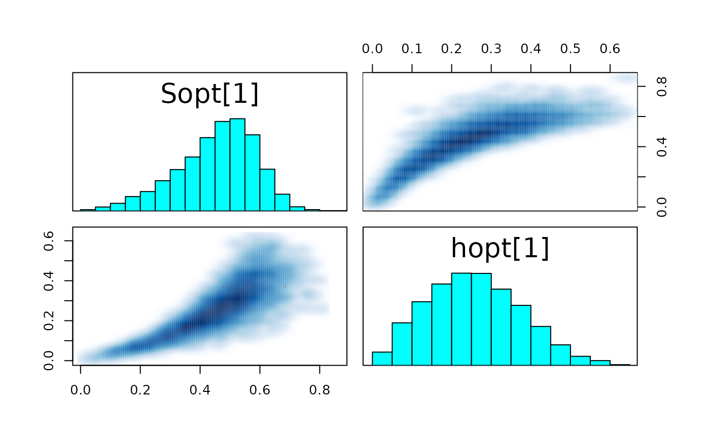
#> Warning in par(usr): argument 1 does not name a graphical parameter
#> Warning in par(usr): argument 1 does not name a graphical parameter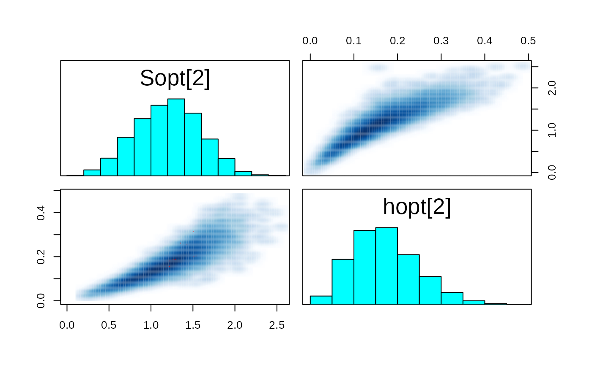
#> Warning in par(usr): argument 1 does not name a graphical parameter
#> Warning in par(usr): argument 1 does not name a graphical parameter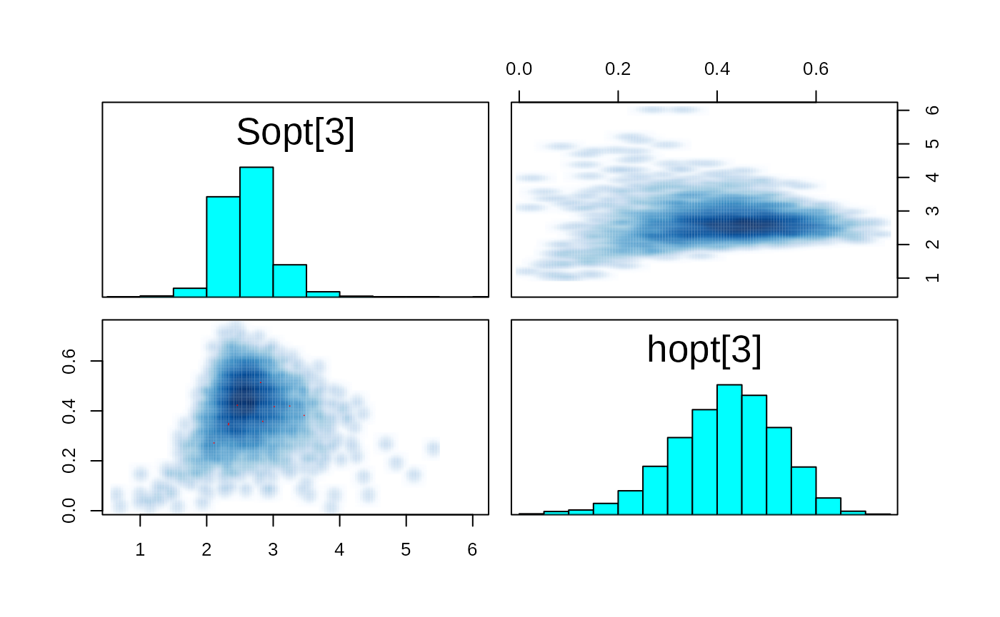
#> Warning in par(usr): argument 1 does not name a graphical parameter
#> Warning in par(usr): argument 1 does not name a graphical parameter
#> Warning in par(usr): argument 1 does not name a graphical parameter
#> Warning in par(usr): argument 1 does not name a graphical parameter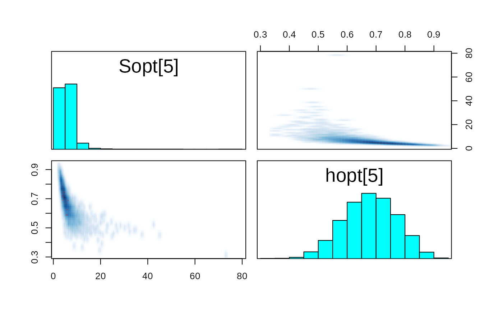
#> Warning in par(usr): argument 1 does not name a graphical parameter
#> Warning in par(usr): argument 1 does not name a graphical parameter
#> Warning in par(usr): argument 1 does not name a graphical parameter
#> Warning in KernSmooth::bkde2D(x, bandwidth = bandwidth, gridsize = nbin, :
#> Binning grid too coarse for current (small) bandwidth: consider increasing
#> 'gridsize'
#> Warning in par(usr): argument 1 does not name a graphical parameter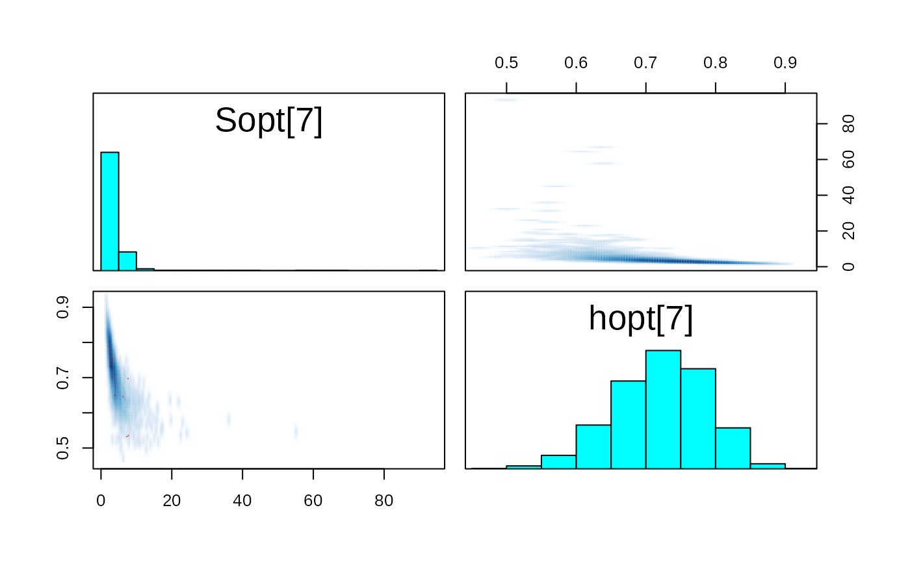
#> Warning in par(usr): argument 1 does not name a graphical parameter
#> Warning in par(usr): argument 1 does not name a graphical parameter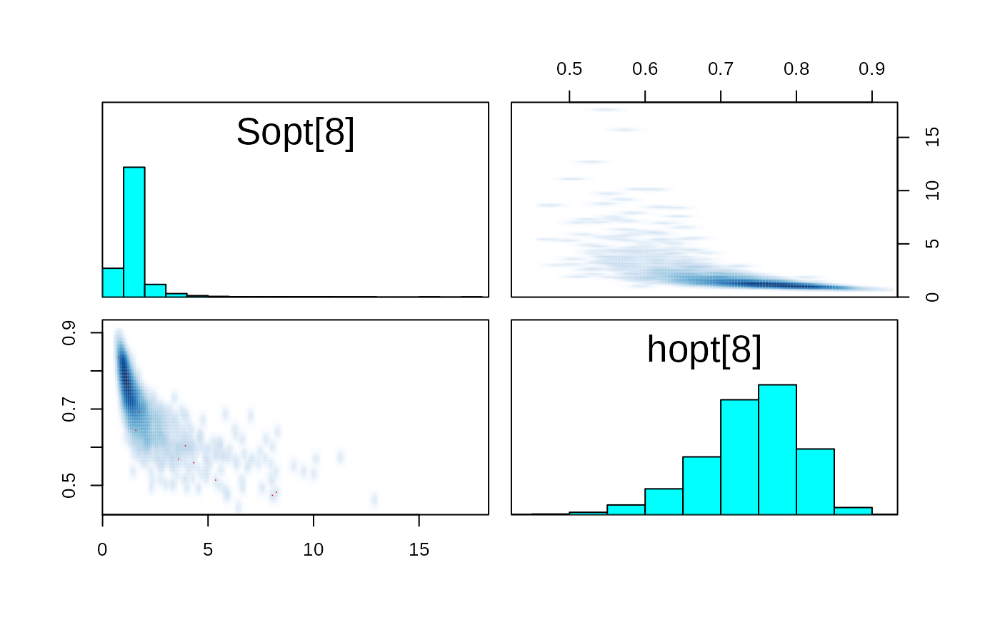
#> Warning in par(usr): argument 1 does not name a graphical parameter
#> Warning in par(usr): argument 1 does not name a graphical parameter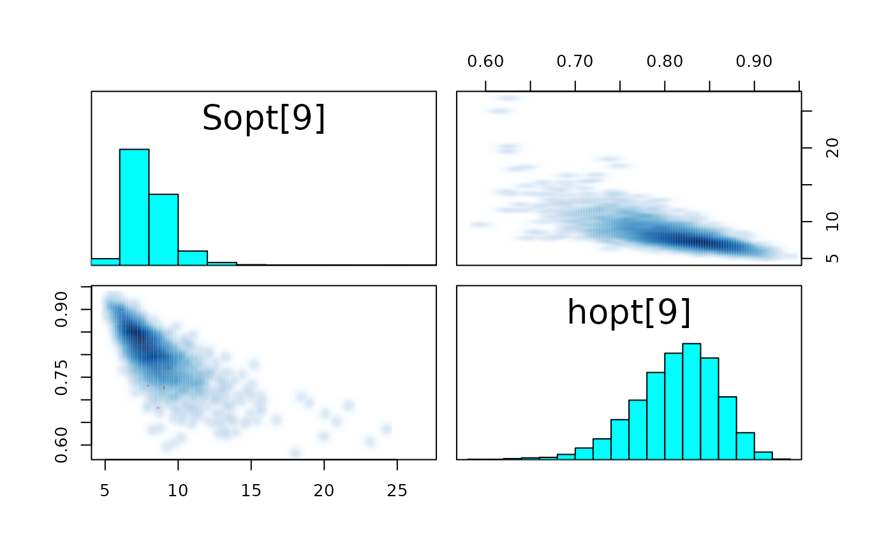
#> Warning in par(usr): argument 1 does not name a graphical parameter
#> Warning in par(usr): argument 1 does not name a graphical parameter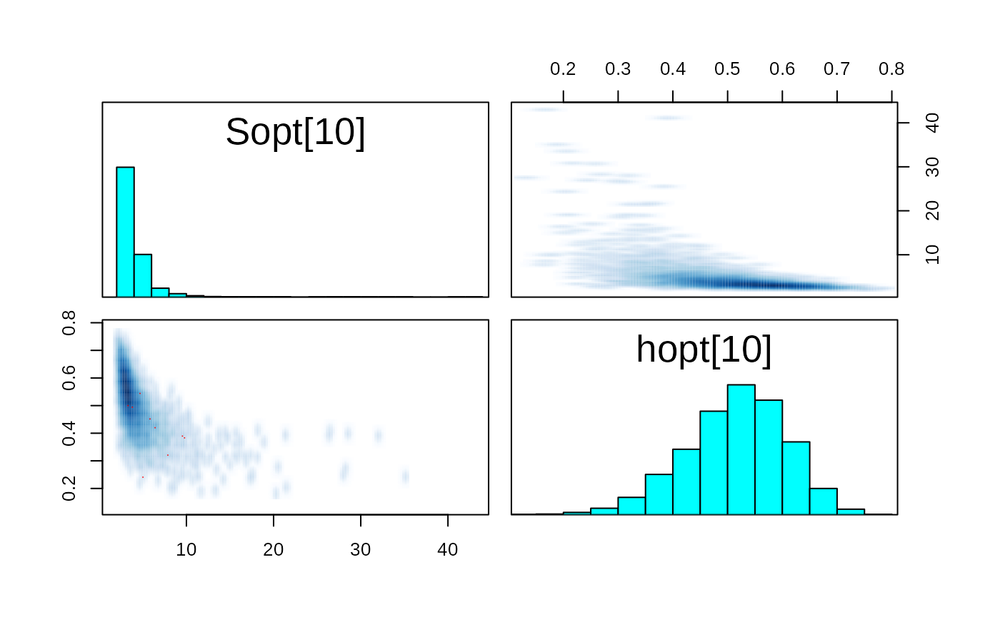
#> Warning in par(usr): argument 1 does not name a graphical parameter
#> Warning in par(usr): argument 1 does not name a graphical parameter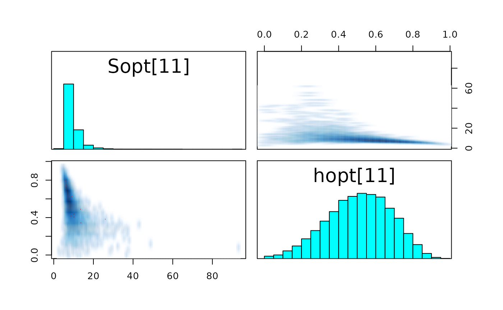
#> Warning in par(usr): argument 1 does not name a graphical parameter
#> Warning in par(usr): argument 1 does not name a graphical parameter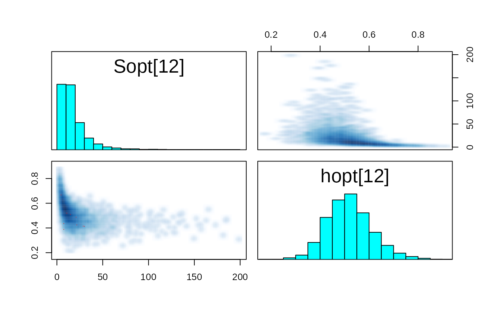
#> Warning in par(usr): argument 1 does not name a graphical parameter
#> Warning in par(usr): argument 1 does not name a graphical parameter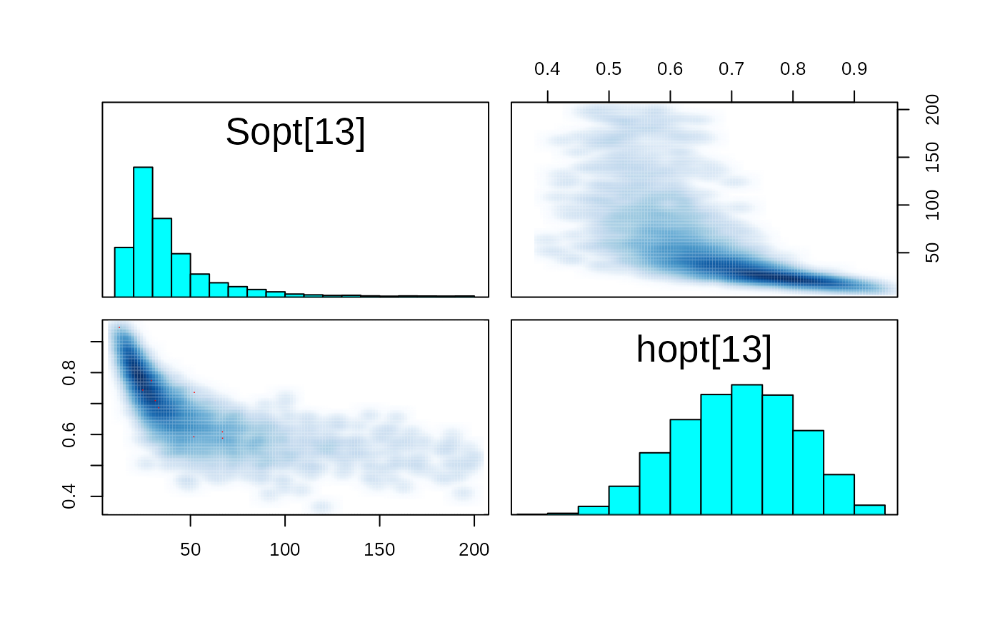
Results and analysis
names_ind <- SRSalmon$name_riv#c("Nivelle","Oir","Frome","Dee","Burrishoole","Lune","Bush",
#"Mourne","Faughan","Girnock Burn","North Esk","Laerdalselva","Ellidaar")
names_pred <- c("Nivelle","new 45?","Oir","new 50?","Frome","Dee","Burrishoole","Lune","new 55?","Bush",
"Mourne","Faughan","Girnock Burn","North Esk","new 60?","Laerdalselva","Ellidaar","new 65?")
dfw_hier <- extract_wider(fit_hier)
dfl_hier <- extract_longer(fit_hier) %>% mutate(Model = "Hierarchical")Plotting Figure 9., Page 210
Sopt_hier <- dfl_hier %>%
filter(str_detect(parameter, "Sopt\\.")) %>%
mutate(Site = as_factor(str_sub(parameter, str_length("Sopt.")+1))) %>%
group_by(Site) %>% summarise(Sopt_med = median(value))%>%
select(Sopt_med) %>% as_vector()
hopt_hier <- fit_hier %>% extract_longer() %>%
filter(str_detect(parameter, "hopt\\.")) %>%
mutate(Site = as_factor(str_sub(parameter, str_length("hopt.")+1))) %>%
group_by(Site) %>% summarise(hopt_med = median(value))%>%
select(hopt_med) %>% as_vector()
Sopt_ind <- dfl_gamma %>%
filter(str_detect(parameter, "Sopt\\.")) %>%
mutate(Site = as_factor(str_sub(parameter, str_length("Sopt.")+1))) %>%
group_by(Site) %>% summarise(Sopt_med = median(value))%>%
select(Sopt_med) %>% as_vector()
hopt_ind <- dfl_gamma %>%
filter(str_detect(parameter, "hopt\\.")) %>%
mutate(Site = as_factor(str_sub(parameter, str_length("hopt.")+1))) %>%
group_by(Site) %>% summarise(Sopt_med = median(value))%>%
select(Sopt_med) %>% as_vector()
max_S <- sapply(seq_along(Sopt_ind), function(k) max(SRSalmon$S[SRSalmon$riv == k]))
Splot <- seq(0,100,length.out=1000)
Rplot_ind <- lapply(seq_along(Sopt_ind),
function(k) {
tibble(S = Splot[1:ceiling(15*max_S[k])],
river = as_factor(names_ind[k]),
R = exp( log(Splot[1:ceiling(15*max_S[k])]) + hopt_ind[k] -
log(1-hopt_ind[k]) - (hopt_ind[k]/Sopt_ind[k])*Splot[1:ceiling(15*max_S[k])] ))
})%>%
bind_rows()
Rplot_hier <- lapply(seq_along(Sopt_hier),
function(k) {
tibble(S = Splot[1:ceiling(15*max_S[k])],
river = as_factor(names_ind[k]),
R = exp( log(Splot[1:ceiling(15*max_S[k])]) + hopt_hier[k] -
log(1-hopt_hier[k]) - (hopt_hier[k]/Sopt_hier[k])*Splot[1:ceiling(15*max_S[k])] ))
})%>%
bind_rows()
tibble(R = SRSalmon$R, S = SRSalmon$S,
river = factor(names_ind[SRSalmon$riv], levels = names_ind)) %>%
ggplot() +
aes(x = S, y = R) +
geom_point() +
facet_wrap(~ river, scales = "free") +
geom_line(data = Rplot_hier, size = 1) +
geom_line(data = Rplot_ind, size = 1, linetype = "dashed") +
plot_theme +
theme(axis.text.x = element_text(angle = 0))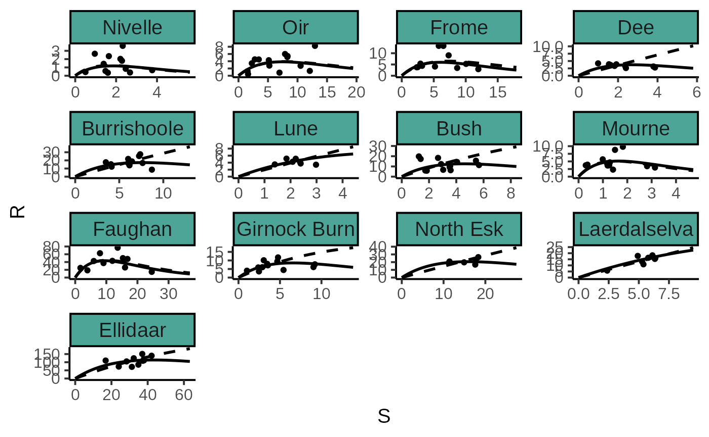
dfl <- bind_rows(dfl_gamma %>% mutate(Model = "Independent"), dfl_hier)
dfl %>%
filter(str_detect(parameter, "Sopt\\.")) %>%
rename("S*" = value) %>%
mutate(Site = as_factor(str_sub(parameter, str_length("Sopt.") + 1))) %>%
ggplot() +
aes(x = Site, y = log(`S*`), fill = Model ) +
geom_boxplot(outlier.shape = NA, outlier.size = .25) +
scale_x_discrete(labels = names_ind, guide = guide_axis(angle = 90)) +
ylim(c(-3,6)) +
scale_fill_manual(values = c("gray50", "gray90")) +
ylab("log(S*)") +
plot_theme
#> Warning: Removed 47 rows containing non-finite values (stat_boxplot).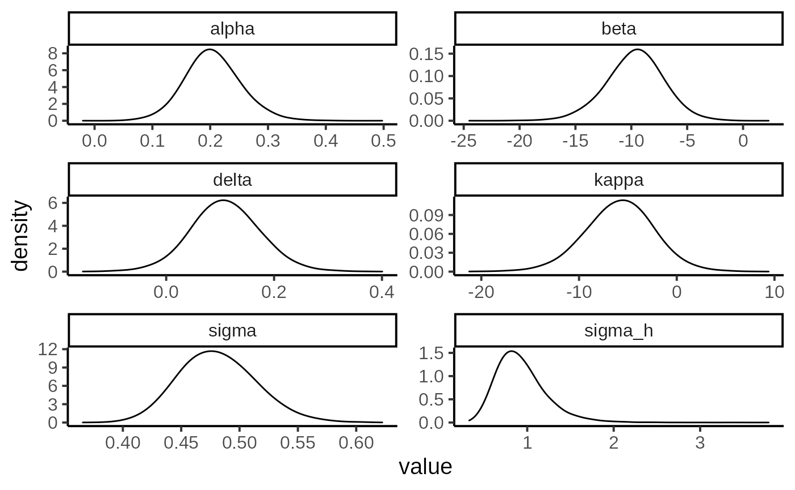
dfl %>%
filter(str_detect(parameter, "hopt\\.")) %>%
rename("h*" = value) %>%
mutate(Site = as_factor(str_sub(parameter, str_length("hopt.") + 1))) %>%
ggplot() +
aes(x = Site, fill = Model, y = `h*`) +
geom_boxplot(outlier.shape = NA,outlier.size = .25) +
scale_x_discrete(labels = names_ind, guide = guide_axis(angle = 90)) +
scale_fill_manual(values = c("gray50", "gray90"))+
plot_theme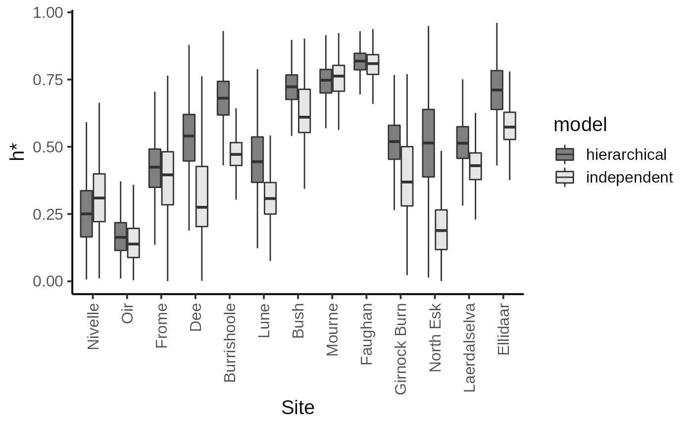
Plotting marginal posterior probability shapes of the parameters \(\alpha\), \(\beta\), \(\delta\), \(\kappa\), \(\sigma\), \(\tau_{h*}\) (Fig. 9.12 page 216)
dfl_hier %>%
filter(parameter %in% c("alpha", "beta", "delta", "kappa", "sigma", "sigma_h")) %>%
mutate(parameter = replace(parameter, parameter == "sigma_h", "sigma[h]")) %>%
ggplot() + aes(x = value) +
geom_density(adjust = 2) +
xlab("")+ ylab("")+
facet_wrap(~ parameter, ncol = 2, scales = "free", labeller = label_parsed) +
plot_theme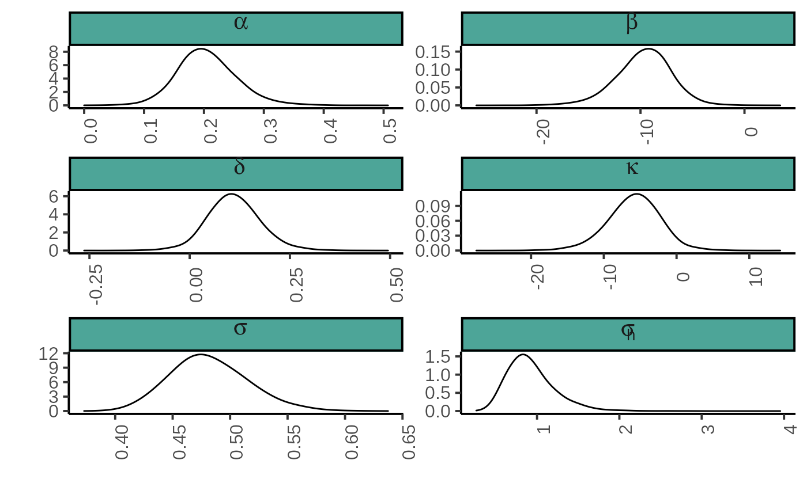
Marginal posterior distributions and posterior predictive of \(\log(S*)\) for the hierarchical model (fig. 9.13 page 217)
reg_param <- dfw_hier %>% select(alpha, beta) %>%
summarise(med_a = median(alpha), med_b = median(beta))
fit_data <- dfl_hier %>%
filter(str_detect(parameter, "Sopt\\.")) %>%
rename("S*" = value) %>%
mutate(id = as.factor(str_sub(parameter, str_length("Sopt.") + 1)),
Latitude = SRSalmon$lat[as.numeric(str_sub(parameter, str_length("Sopt.") + 1))],
type = "data")
fit_pred <- dfl_hier %>%
filter(str_detect(parameter, "Sopt_")) %>%
rename("S*" = value) %>%
mutate(id = as.factor(str_sub(parameter, str_length("Sopt_")+1)),
Latitude = SRSalmon$lat_pred[as.numeric(str_sub(parameter,str_length("Sopt_pred.") + 1))],
type = "pred")
fit_data %>% bind_rows(fit_pred) %>%
ggplot() +
aes(x = Latitude, group = id, y = log(`S*`), fill = type) +
geom_boxplot(outlier.shape = NA,outlier.size = .25, varwidth = FALSE) +
# scale_x_discrete(labels = names_ind, guide = guide_axis(angle = 90)) +
scale_fill_manual(values = c("gray90", "gray50")) +
geom_abline(slope = reg_param$med_a, intercept = reg_param$med_b) + #-reg_param$med_a*mean(data_hier$lat)) +
ylim(c(-2,5)) +
ylab("log(S*)") +
plot_theme
#> Warning: Removed 1184 rows containing non-finite values (stat_boxplot).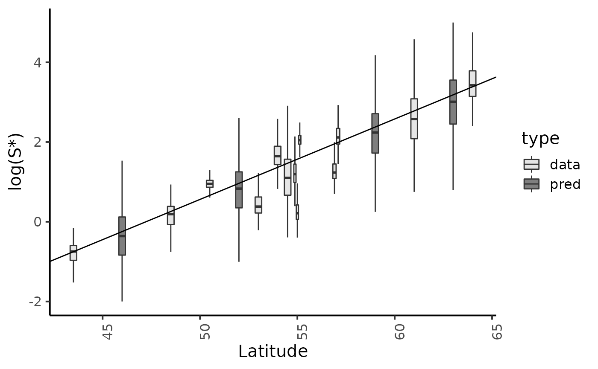
Marginal posterior distributions and posterior predictive of \(h*\) for the hierarchical model (fig. 9.14 page 218)
reg_param <- dfw_hier %>%
select(delta, kappa) %>%
summarise(med_d = median(delta), med_k = median(kappa))
fit_data <- dfl_hier %>%
filter(str_detect(parameter, "^hopt\\.")) %>% # detect hopt. without logit_hopt.
rename("h*" = value) %>%
mutate(id = as.factor(str_sub(parameter, str_length("hopt.") + 1)),
Latitude = SRSalmon$lat[as.numeric(str_sub(parameter, str_length("hopt.") + 1))],
type = "data")
fit_pred <- dfl_hier %>%
filter(str_detect(parameter, "^hopt_")) %>%
rename("h*" = value) %>%
mutate(id = as.factor(str_sub(parameter, str_length("hopt_") + 1)),
Latitude = SRSalmon$lat_pred[as.numeric(str_sub(parameter, str_length("hopt_pred.") + 1))],
type = "pred")
fit_data %>% bind_rows(fit_pred) %>%
ggplot() +
aes(x = Latitude, group = id, y = `h*`, fill = type) +
geom_boxplot(outlier.shape = NA,outlier.size = .25, varwidth = FALSE) +
# scale_x_discrete(labels = names_ind, guide = guide_axis(angle = 90)) +
scale_fill_manual(values = c("gray90", "gray50")) +
annotate(x = seq(42, 65, .1),
y = 1/(1+exp(-reg_param$med_d*seq(42, 65, .1) -reg_param$med_k)),
geom = "line") +
ylim(c(0,1)) +
plot_theme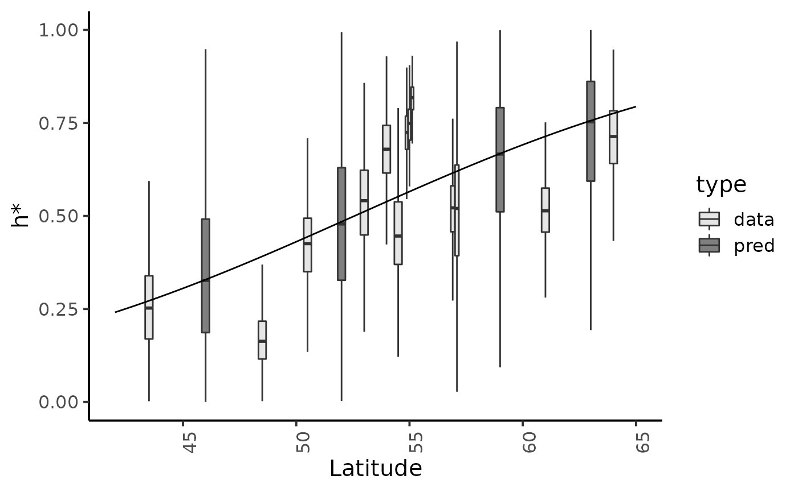